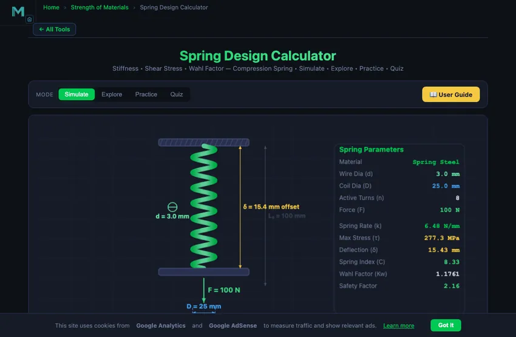
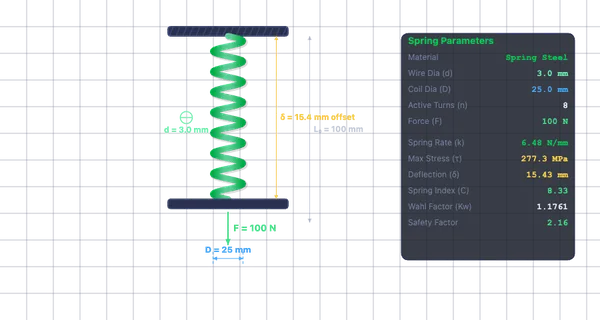

Spring Design Calculator
Stiffness • Shear Stress • Wahl Factor — Compression Spring • Simulate • Explore • Practice • Quiz
3D Model — Machine Design: Springs Design
Interactive 3D model of this apparatus. Pick a component on the right, then drag to rotate · scroll to zoom · right-drag to pan.
1 Overview
The Spring Design Calculator analyses helical compression springs, computing spring rate (stiffness k), maximum shear stress with Wahl correction factor, deflection, spring index (C = D/d), free length, solid length, and safety factor. The governing formula for spring rate is k = Gd4/(8D3n), where G is the shear modulus, d is wire diameter, D is mean coil diameter, and n is the number of active turns.
Helical compression springs are found in everything from ballpoint pens to automotive suspension systems. This calculator lets you explore how changing any design parameter affects performance, helping you design springs that meet specific load-deflection requirements while staying within safe stress limits.
2 Entering the Inputs
The simulator opens in Simulate mode with Spring Steel (G = 80 GPa), wire diameter d = 3 mm, coil diameter D = 25 mm, 8 active turns, and 100 N applied force. The canvas shows an animated spring with compression proportional to the deflection. Readout badges display k, τmax, δ, and spring index C.
Try the Presets (Light Duty, Heavy Duty, Valve Spring, Pen Spring) to instantly load common configurations. Then fine-tune parameters with the sliders. The readout card grid below shows all computed values including Wahl factor Kw, free length, solid length, and safety factor.
3 Reading the Result
Choose a Material: Spring Steel (G = 80 GPa, yield shear ≈ 600 MPa), Stainless Steel (G = 69 GPa, yield ≈ 500 MPa), or Phosphor Bronze (G = 41 GPa, yield ≈ 300 MPa). Adjust Wire Diameter d (0.5–10 mm), Coil Diameter D (5–80 mm), Active Turns n (2–20), and Applied Force F (0–500 N).
The spring index C = D/d should ideally fall between 4 and 12. Below 4, springs are difficult to manufacture and have high stress; above 12, they tend to tangle and buckle. The Wahl factor Kw = (4C − 1)/(4C − 4) + 0.615/C corrects for curvature and direct shear, increasing the computed stress by 10–50% depending on C.
Maximum shear stress is τmax = Kw × 8FD/(πd3). Deflection is δ = F/k = 8FD3n/(Gd4). The safety factor = yield shear stress / τmax. A value of 1.2–1.5 is adequate for static loads; 2.0+ for fatigue-loaded springs.
4 The Formulas Behind It
Explore mode offers 12 concepts in three categories: Spring Types (compression, extension, torsion springs, Belleville washers), Key Formulas (spring rate derivation, Wahl factor, deflection, free/solid length, buckling criteria), and Material Properties (shear modulus, yield shear stress, fatigue endurance, material comparison).
Each concept includes a text explanation and worked example. Pay special attention to the spring rate formula — wire diameter enters as the fourth power (d4), so doubling the wire diameter increases stiffness by 16 times.
5 Try a Problem
Practice mode generates random spring design problems — for example, “Calculate the spring rate for d = 4 mm, D = 30 mm, n = 6, Spring Steel.” Enter your numeric answer, click Check, and review step-by-step solutions. Your running score is tracked.
Quiz mode presents 5 randomised questions covering spring rate, shear stress with Wahl correction, deflection, spring index, and material selection. Your score and detailed review are displayed at the end.
6 Engineering Notes
- The spring rate k = Gd4/(8D3n). Wire diameter has the strongest influence (4th power) — a small increase in d dramatically increases stiffness.
- Keep the spring index C = D/d between 4 and 12 for manufacturable, reliable springs.
- The Wahl correction factor is essential — ignoring it underestimates the actual stress on the inner coil surface by 10–50%.
- Ensure the working deflection does not bring the spring to solid length (all coils touching). Maintain at least 10–15% clearance.
- For fatigue-loaded springs (e.g., valve springs), use a safety factor of at least 2.0 and consider shot peening to improve fatigue life.
- Compare the Light Duty and Heavy Duty presets to see how wire diameter and coil diameter scale for different load ranges.
- Phosphor bronze springs have lower stiffness but excellent corrosion resistance — ideal for marine and chemical environments.
Spring Design Calculator — Helical Compression Spring Engineering

A helical compression spring is one of the most widely used mechanical components in engineering. Found in everything from ballpoint pens to automotive suspension systems, these springs store elastic energy when compressed and release it when the load is removed. Proper spring design requires balancing multiple parameters: wire diameter, coil diameter, number of active turns, material selection, and the applied force. This calculator provides a comprehensive toolset for analysing helical compression springs according to standard mechanical engineering principles.
Spring Rate (Stiffness) Calculation
The spring rate or stiffness (k) defines how much force is needed per unit deflection. For a helical compression spring, it is calculated as k = Gd4 / (8D3n), where G is the shear modulus of the wire material, d is the wire diameter, D is the mean coil diameter, and n is the number of active coils. A higher wire diameter dramatically increases stiffness (fourth power), while a larger coil diameter decreases it (inverse cube). Engineers select the spring rate to match the required load-deflection characteristics of their application.
Wahl Correction Factor and Maximum Shear Stress
The Wahl correction factor (Kw) accounts for the curvature effect and direct shear in helical springs. It is given by Kw = (4C − 1) / (4C − 4) + 0.615 / C, where C = D/d is the spring index. The maximum shear stress on the wire is then τ = Kw × 8FD / (πd3). Without the Wahl factor, the stress calculation would underestimate the actual stress on the inner surface of the coil, potentially leading to premature failure. A spring index between 4 and 12 is generally recommended; values below 4 are difficult to manufacture, while values above 12 tend to tangle.
Deflection, Free Length, and Solid Length
The deflection (δ) under load equals F/k, or equivalently 8FD3n / (Gd4). The free length is the unloaded length of the spring, typically calculated as (n + 2) × d + n × gap, where the extra 2 turns are inactive end coils (for squared-and-ground ends). The solid length is the minimum possible length when all coils are in contact: Ls = (n + 2) × d. The spring must be designed so that the working deflection does not bring it to solid length during normal operation, maintaining adequate clearance.
Material Selection and Safety Factor
The three most common spring materials are spring steel (G ≈ 80 GPa, yield shear ≈ 600 MPa), stainless steel (G ≈ 69 GPa, yield shear ≈ 500 MPa), and phosphor bronze (G ≈ 41 GPa, yield shear ≈ 300 MPa). The safety factor is the ratio of the material's yield shear stress to the calculated maximum shear stress. A safety factor of at least 1.2 to 1.5 is recommended for static applications, and 2.0 or higher for fatigue-loaded springs. This simulator lets you compare materials instantly by switching the material pill.
Designing a Valve Spring — A Worked Compression Spring
Design a valve spring that delivers 100 N at 25 mm compression. Use spring steel (G = 80 GPa, τallow = 600 MPa). Start by picking a wire diameter (2.5 mm) and mean coil diameter (20 mm).

| Step | Working | Result |
|---|---|---|
| Required spring rate | k = F/δ = 100/25 | 4 N/mm |
| Spring index | C = D/d = 20/2.5 | 8 (in safe range 4-12) |
| Solve for active turns from k | n = Gd⁴/(8D³k) = 80,000×2.5⁴/(8×20³×4) | n ≈ 12 turns |
| Wahl factor | Kw = (4C−1)/(4C−4) + 0.615/C = (31/28) + 0.077 | 1.184 |
| Maximum shear stress | τ = Kw·8FD/(πd³) = 1.184×8×100×20/(π×2.5³) | 386 MPa |
| Safety factor | SF = τallow/τ = 600/386 | 1.55 ✓ |
| Free length (squared-and-ground ends) | Lf = (n+2)d + n×gap, gap ≈ 1.5d | Lf ≈ 80 mm |
Safety factor 1.55 is appropriate for a static application. For an actual valve spring cycling at 6000 rpm in an engine, you would want SF closer to 2.5 to handle fatigue. Either thicker wire (raises d⁴ rapidly) or larger D (raises stress slowly) gets you there.
Why the Wahl Factor Exists
The basic torsion formula τ = 8FD/(πd³) assumes a straight wire under pure torsion. In a real helical spring the wire is curved, which puts a higher shear stress on the inside of the curve, and the direct shear adds another component. The Wahl factor Kw bumps the calculated stress up to account for both effects.
For a typical spring index C = 8, Kw is about 1.18 — meaning the inside surface of the coil sees 18% more stress than the simple formula predicts. Spring failures almost always start as cracks on the inside surface, which is exactly where the Wahl factor predicts the stress peaks. The factor is named after A. M. Wahl who derived it in the 1940s; before that, springs were designed empirically with large safety factors to compensate.
When a Helical Compression Spring Is the Wrong Choice
- Constant-force applications. A helical spring’s force varies linearly with deflection. If you need constant force (camera shutter, retractable measuring tape), use a constant-force spring (flat coiled strip) instead.
- Very small or very large deflection. Outside about 5−50 mm of working travel, other spring types (Belleville washers for short, coil-over-shock for long) become more practical.
- Very high frequency cycling. Above about 50 Hz the wire’s own mass and natural frequency start mattering. The spring “surges” — high-frequency oscillations propagate through it. Race-engine valve springs use beehive shapes or progressive-pitch geometry to avoid surge.
- Tight space constraints. Helical springs need axial length. For very flat assemblies, disc springs (Belleville) or wave springs are alternatives.
References
- Shigley & Mischke — Mechanical Engineering Design, 10th ed., Chapter 10 (Mechanical Springs).
- Wahl, A. M. (1944) — Mechanical Springs, Penton.
- SAE HS-795 — Spring Design Manual.
- BS EN 13906-1 — the European standard for helical compression springs.
Helical Compression Spring Formulas
| Parameter | Formula | Description |
|---|---|---|
| Spring Rate | k = Gd&sup4; / (8D³Na) | G = shear modulus, d = wire dia, D = coil dia |
| Shear Stress | τ = KW × 8FD / (πd³) | KW = Wahl correction factor |
| Wahl Factor | KW = (4C−1)/(4C−4) + 0.615/C | C = spring index = D/d |
| Spring Index | C = D / d | Ideal range: 4 ≤ C ≤ 12 |
| Deflection | δ = F / k = 8FD³Na / (Gd&sup4;) | Linear deflection under load F |
| Natural Frequency | f = (d/2πNaD²) √(G/2ρ) | Surge frequency of coil spring |
Spring Wire Materials — Shear Modulus (G)
| Material | G (GPa) | Max Service Temp (°C) |
|---|---|---|
| Music Wire (ASTM A228) | 81.7 | 120 |
| Chrome Vanadium (ASTM A231) | 77.2 | 220 |
| Chrome Silicon (ASTM A401) | 77.2 | 250 |
| Stainless Steel 302 | 69.0 | 260 |
| Inconel X-750 | 75.8 | 600 |
| Phosphor Bronze | 41.4 | 100 |
Explore Related Simulators
If you found this Spring Design simulator helpful, explore our Hooke’s Law simulator, Simple Harmonic Motion simulator, Shaft Torsion simulator, and Stress–Strain Curve simulator for more hands-on practice.